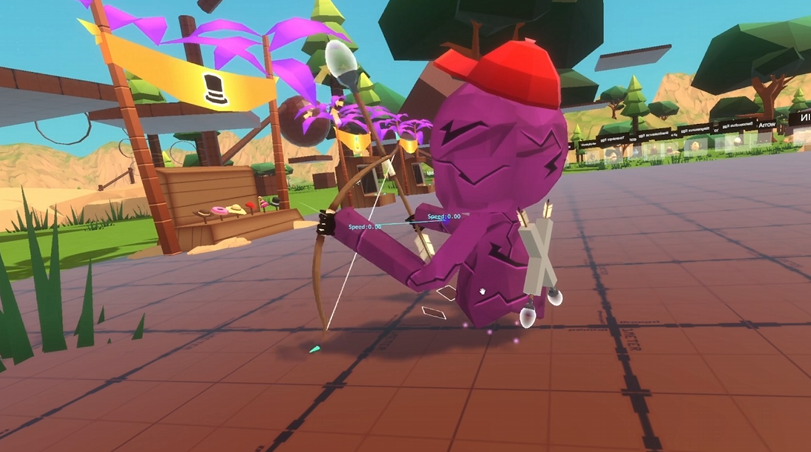

An online multiplayer VR game where players capture and ride dinosaurs over a dynamic landscape. Inspired by 'playground-style' games like Gorilla Tag and Animal Company.
Used Unity Gaming Services to establish online connections and voice chat communication between players.
Through remote procedure calls we used a custom command system to share object data over a network. This gave us more control over physics and state handling.
Created a modular system for 'touch' and 'spatial' UI.
Used experience gained from GravThrow about the importance of building atomic objects and layout components to easily modify panels.
INSERT TOUCH (terminal) AND SPATIAL UI IMAGES HERE
Developed the system for creating, destroying, and handling in-game items.
Two items in the game, the bow and arrow, were fundamental to interacting with the world. Players could fire 'capture' arrows at dinosaurs to transform them into an egg.
Contributed to iterative development of the riding mechanic.
In an attempt to simulate riding on 'dinoback', we initially decided to use the relative distance of the player's hands from their avatar to determine the speed and rotation of the dinosaur.
While working on this mechanic we kept running into compromises between comfort and control; we realised that player rotation had to (for the most part) be independent of dinosaur rotation to avoid a nauseating parallax effect. This, however, meant choosing which z-axis to use when measuring the player's arm extensions: do we use the player's, or the dinosaur's?
To add, we also noticed the player had to make a constant trade-off between speed and rotation.
We eventually found a suitable solution, with the thumbstick used for speed and the arm extension for rotation.
Overall this was a challenging task for the team, requiring clear communication with the designers and in-game tools to modify parameters at runtime.